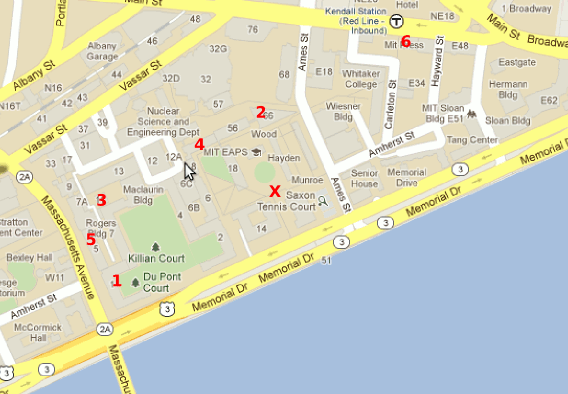

The QR code leads to a page with 6 coordinates:
In each of these buildings, we put up fake posters advertising for a GIS job.
Each poster has a QR code leading to a Google Maps link. (These links redirect through our server, so non-Hunters scanning the codes learn that the posters are fake.)
Note that there is also a Pierce Boathouse (Building W8); we put up a similar poster here linking to a page reading “This is an ambiguous location; the other one is correct.”
The first letters of the locations spell CHENEY. Outside the Margaret Cheney Room (3-310) we put up another poster linking to a page with the following text:
Chipley, Florida
Once you’ve figured out the password, please enter it below: [text field which decrypts the answer with AES]
At this point, one must notice that all of the Google Maps links used the same, highly zoomed out view, suggesting that the locations be plotted on the same map. Simultaneously, the six buildings in which we posted the QR codes with those links can be plotted on a map of MIT. These two sets of points form the same configuration on a vastly different scale.
However, Chipley, FL does not match the Cheney room. Instead, it matches the McDermott Court (a.k.a. the Dot). On the Calder sculpture in this location, we placed a final QR code linking to a page with the string “The password is: draftsmen raving hindered herbal”
Entering the password in the Cheney location reveals the answer, VELVET ELVIS.
These are the locations on campus where we put posters up:
Near 1-125
Near 1-138
Near 1-151
Near 1-165
Near 5-111
Near 5-121
Near 5-129
In 11-112
Near 11-120
Near 16-137
Near 16-177
Near 16-188
Near 66-125
Near 66-157
Near the Ames St. entrance
On a bulletin board in the lobby
On another bulletin board in the lobby
Near the door
Near the door
On one of the legs